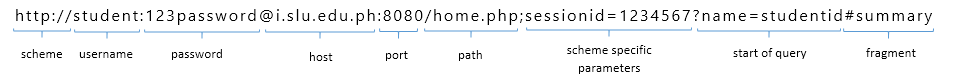
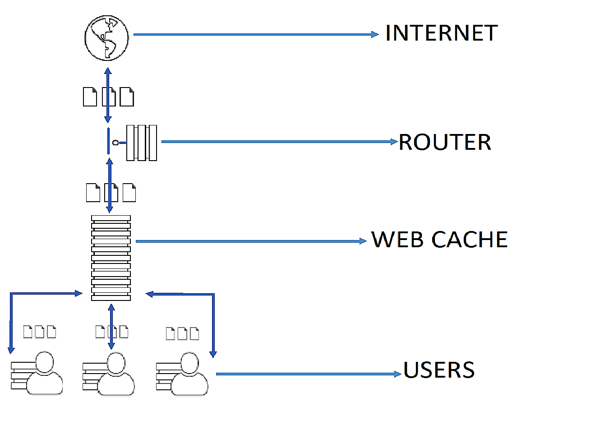

Hypertext Transfer Protocol (HTTP)
- Application layer used primarily to retrieve hypertext (on hypermedia) documents and resources on the World Wide Web
- Jointly developed by the W3C and the IETF
- Protocol - Set of rules needs to be followed
- HTTP 1.1 requires atleast the HOST request
Fundamentals

- HTTP typically runs on the top of TCP/IP, using TCP port 80 by default (TCP port 443 for HTTPS)
- HTTP resources are identified using URIs (specifically in HTTP URLs)
- HTTP is based on client-server achitecture
- Clients are also known as User Agent (UA):
-
Web browsers, Web crawlers, e-mail clients, and other end user tools and applications
- Servers:
-
origin servers, proxy servers, getaways, tunnels
- HTTP uses a request-response standard protocol
-
The client sends an HTTP request message to the server
The server processes the request and replies with an HTTP response message
- HTTP is a stateless communications protocol
-
Servers do not keep informatin about clients in between requests
Web applications effect session tracking using mechanism such as cookies on URL-encoded session information to keep track of related client requests
- HTTP provides suport for other functionalities such as cahe control, content media type (MIME) specification, language and character set specification,
content/transfer coding, client-server protocol negotiatons, persistent connections, request pipelining, etc.
Cookie
HTTP Cookie which is also called web cookie, Internet cookie, browser cookie or simply cookie is small piece of data sent from a website and stored on the user's computer by the user's web browser while user is browsing.
Cache
HTTP Cache is an information technology for the temporary local storage or copy of resource that is fetched from a server.

HTTP Request Methods
- GET
- The GET method is commonly used in HTTP method, It is used to request from the server the retrieval if the source identified by the request URI and can be combine with conditional and/or range request headers to effect conditional and/or partial resource retrieval.
- HEAD
- The HEAD Method is identical to GET method, Method will asks for a response but without the response body. This is very useful for retrieving.
- POST
- The POST method requests that the origin server accept the entity enclosed in the request as a new subordinate of the resource identified by the Request-URI in the Request-Line.
- PUT
- The PUT method requests that the enclosed entity in the message body under the specified request URI.
- TRACE
- The TRACE method requests the server to "echo" back to the client of received request and typically used for testing or diagnostics of the request chain.
- DELETE
- The DELETE method requests the server to delete the resource identified by the Request-URI.
- CONNECT
- The CONNECT method is reserved for used of tunneling proxy servers and converts the request connection to a transparent TCP/IP tunnel.
- OPTION
- The OPTIONS method returns the HTTP methods what a server can do. It can be used to check the functionality of a web server by requesting.
HTTP Request-Response Header
Request Header
- Methods – HEAD, GET, POST, PUT, DELETE, TRACE, CONNECT, OPTION
- Request URI – target
- HTTP Protocol Version
-
Message Headers
- General – used by either client or server
- Request – client
- Response – server
- Entity – content
Empty Line (CRLF)
Message Body(Optional)
- DNT – do not track, an extension
- Upgrade – Insecure – Request – also an extension
- Blank line after the Accept- Language – means terminate
Response Header
-
Status Line (CRLF)
- HTTP protocol version
- Status Code
- Reason Phrase
HTTP Protocol Version
- Status Code
- Information(1XX)
- Success(2XX)
- Redirection(3XX)
- Client Error(4XX)
- Server Error(5XX)
Reason Phase
Message Headers
- General, Request and Entity header
Empty Line
Message Body (optional)
HTTP Message Headers
General Header Fields
It is an HTTP header that can be used for the request and response methods but it doesn't apply to the content itself.
- Cache-control
- It is a general-header field used for specifying the directives for the caching mechanisms in both, requests and responses. Caching directives are unidirectional which means a given directive in a request is not implying that the same directive is to be given in the response.
- Connection
- The Connection general header controls whether or not the network connection stays open after the current transaction finishes. If the value sent is keep-alive, the connection is persistent and not closed, allowing for subsequent requests to the same server to be done.
- Date
- The Date general HTTP header contains the date and time in which the message was originated.
- Pragma
- The Pragma general-header field is used to include implementation specific directives that might apply to any recipient along the request/response chain.
- Trailer
- The Trailer response header allows the sender to include additional fields at the end of chunked messages in order to supply metadata that might be dynamically generated while the message body is sent, such as a message integrity check, digital signature, or post-processing status.
- Transfer-encoding
- The Transfer-Encoding general-header field indicates what type of transformation has been applied to the message body in order to safely transfer it between the sender and the recipient. This is not the same as content-encoding because transfer-encodings are a property of the message, not of the entity-body.
- Upgrade
- The Upgrade general-header allows the client to specify what additional communication protocols it supports and would like to use if the server finds it appropriate to switch protocols.
- Via
- The Via general header is added by proxies, both forward and reverse proxies, and can appear in the request headers and the response headers. It is used for tracking message forwards, avoiding request loops, and identifying the protocol capabilities of senders along the request/response chain.
- Warning
- The Warning general-header is used to carry additional information about the status or transformation of a message which might not be reflected in the message. A response may carry more than one Warning header.
Request Header Fields
- Accept
- It can be used to specify certain media types which are acceptable for the response.
- Accept-charset
- It can be used to indicates acceptable character sets for the response.
- Accept-encoding
- It is similar to Accept however the difference is that it restricts the acceptable content-codings in the response.
- Accept-language
- It is also similar to Accept but it restricts the preferred set of natural languages as a response to the request.
- Authorization
- The value of it consists of credentials containing the authentication information of the user agent for the realm of the resource being requested.
- Except
- It is used to indicate the required particular set of server behaviors by the client.
- From
- It contains an Internet e-mail address for the user who controls the requesting user agent.
- Host
- It is used to indicate the Internet host and the port number of the resource being requested.
- If-Match
- It is used with a method to make it conditional. This header requests the server to perform the requested method only if the given value in this tag matches the given entity tags represented by ETag.
- If-Modified-Since
- It requests HTTP header to make the request conditional in which the server will send back the requested resource, with a 200 status, only if it has been last modified after the given date. If the request has not been modified since, the response will be a 304 without any body.
- If-Unmodified-Since
- It requests HTTP header to make the request conditional in which the server will send back the requested resource, or accept it in the case of a POST or another non-safe method, only if it has not been last modified after the given date. If the request has been modified after the given date, the response will be a 412 (Precondition Failed) error.
- If-None-Match
- It is used with a method to make it conditional. This header requests the server to perform the requested method only if one of the given value in this tag matches the given entity tags represented by ETag.
- Range
- It specifies the partial range of the requested content from the document.
- If-Range
- It can be used with a conditional GET to request only the portion of the entity that is missing, if it has not been changed, and the entire entity if it has been changed.
- Max-forward
- It provides a mechanism with the TRACE and OPTIONS methods to limit the number of proxies or gateways that can forward the request to the next inbound server.
- Proxy-Authorization
- It allows the client to identify itself or the user to a proxy that requires authentication.
- Referer
- It allows the client to specify the address (URI) of the resource from which the URL has been requested.
- User-Agent
- It contains information about the user agent originating the request.
Response Header Fields
- Accept-Range
- It allows the server to indicate its acceptance of range requests for a resource.
- Age
- It conveys the sender's estimate of the amount of time since the response (or its revalidation) was generated at the origin server.
E-tag
It provides the current value of the entity tag for the requested variant.
Location
It is used to redirect the recipient to a location other than the Request-URI for completion.
Proxy-Authenticate
It must be included as a part of a 407 (Proxy Authentication Required) response.
Retry-After
It can be used with a 503 (Service Unavailable) response to indicate how long the service is expected to be unavailable to the requesting client.
Server
It contains information about the software used by the origin server to handle the request.
Vary
It specifies that the entity has multiple sources and may therefore vary according to the specified list of request header(s).
WWW-Authenticate
The value might contain more than one challenge, or if more than one WWW-Authenticate header field is provided, the contents of a challenge itself can contain a comma-separated list of authentication parameters.
Entity Header Fields
Allow
It will list the set of methods supported by the resource identified by the Request-URI.
Content-encoding
It is used as a modifier to the media-type.
Content-Languge
It describes the natural language of the intended audience for the enclosed entity.
Content-length
It indicates the size of the entity-body, in decimal number of OCTETs, sent to the recipient or, in the case of the HEAD method, the size of the entity-body that would have been sent, had the request been a GET.
Content-location
It indicates the size of the entity-body, in decimal number of OCTETs, sent to the recipient or, in the case of the HEAD method, the size of the entity-body that would have been sent, had the request been a GET.
Content-MD5
It may be used to supply an MD5 digest of the entity for checking the integrity of the message upon receipt.
Content-type
It indicates the media type of the entity-body sent to the recipient or, in the case of the HEAD method, the media type that would have been sent, had the request been a GET.
Content-range
It is sent with a partial entity-body to specify where in the full entity-body the partial body should be applied.
Expires
It gives the date or the time after which the response is considered stale.
Last-modified
It indicates the date and time of the modification of the origin server.
HTTP Status Codes
-
- Informational (1xx)
- indicates an interim response for communicating connection status or request progress prior to completing the requested action and sending a final response.
- 100 Continue
- request has been received and has not yet been rejected by the server.
- 101 Switching Protocols
- server understands and is willing to comply with the client's request, via the Upgrade header field for a change in the application protocol being used on this connection.
-
- Success (2xx)
- indicates that the client's request was successfully received, understood, and accepted.
- 200 Ok
- request has succeeded.
- 201 Created
- request has been fulfilled and has resulted in one or more new resources being created.
- 202 Accepted
- the request has been accepted for processing, but the processing has not been completed.
- 203 Non-Authoritative Information
- the request was successful but the enclosed payload has been modified from that of the origin server's 200 (OK) response by a transforming proxy.
- 204 No Content
- the server has successfully fulfilled the request and that there is no additional content to send in the response payload body.
- 205 Reset Content
- user agent reset the "document view".
- 206 Partial Content
- partial content - the server has fulfilled the partial GET request for the resource.
-
- Redirection (3xx)
- indicates that further action needs to be taken by the user agent in order to fulfill the request.
- 300 Multiple Choices
- the target resource has more than one representation, each with its own more specific identifier, user can select a preferred representation.
- 301 Moved Permanently
- the target resource has been assigned a new permanent URI.
- 302 Found
- the target resource resides temporarily under a different URI.
- 303 See Other
- the server is redirecting the user agent to a different resource.
- 304 Not Modified
- the client has performed a conditional GET request and access is allowed, but the document has not been modified.
- 305 Use Proxy
- The requested resource must be accessed through the proxy given by the Location field.
- 307 Temporary Redirect
- the target resource resides temporarily under a different URI and performs an automatic redirection to that URI.
-
- Client Error (4xx)
- indicates that the client made a mistake which resulted to an error
- 400 Bad Request
- the server cannot process the request due to a client error
- 401 Unauthorized
- the request is not accepted because it is not authenticated
- 402 Payment Required
- reserved for future use
- 403 Forbidden
- it indicates that the server understood the request but it doesn't want to authorize it
- 404 Not Found
- the server could not find a current representation for the requested resource
- 405 Method Not Allowed
- it indicates that the method received in the request-line is recognized by the server but not supported by the target resource
- 406 Not Acceptable
- the target resource is unwilling to supply a representation of the resource because it is not in accordance with the negotiation header
fields received in the request
- 407 Proxy Authentication Required
- similar to 401 but it indicates that the client needs to authenticate itself so they can use a proxy
- 408 Request Time-out
- the server did not receive a complete request message within the waiting time
- 409 Conflict
- the request could not be completed because of a conflict with the target resource
- 410 Gone
- the requested resource is no longer available at the server
- 411 Length Required
- the server won't accept the request without the Content-Length header field
- 412 Precondition Failed
- one or more conditions given in the request header fields resulted to false
- 413 Request Entity Too Large
- the server is refusing to process the request because it is larger than what the server can process
- 414 Request-URI Too Long
- the server is refusing the request because the resource's URI is longer than the URI length the server can interpret
- 415 Unsupported Media Type
- the server is refusing to serve the request because it is not in a format that is supported on the target resource
- 416 Request Range Not Satisfiable
- the ranges specified in the Range header field is invalid
- 417 Expectation Failed
- the expectation given in the Expect header field could not be met by the servers
-
- Server Error (5xx)
- the server is aware of the error it caused or is unable of serving the request
- 500 Internal Server Error
- the server encountered a problem that prevented it from serving the request
- 501 Not Implemented
- the server does not recognize the request method and could not give it any resource
- 502 Bad Gateway
- the gateway or proxy received an invalid response from the server it accessed while trying to serve the request
- 503 Service Unavailable
- indicates that the server is currently unavailable because of an overload or ongoing maintenance which will likely be gone after some time
- 504 Gateway Time-out
- the gateway or proxy did not receive a response needed from the server within the time given to complete the request
- 505 HTTP Version Not Supported
- the server does not support the version of the HTTP that was used in the request message